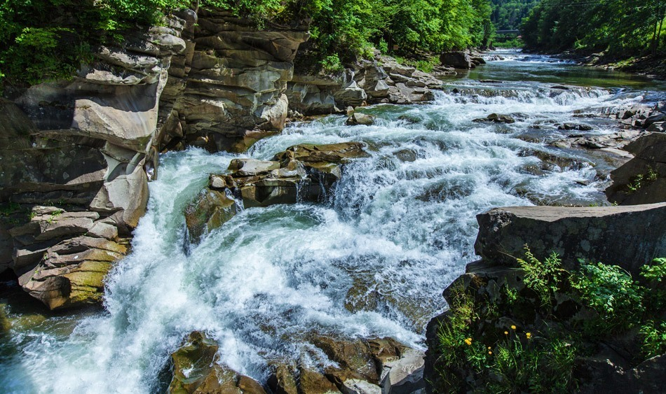
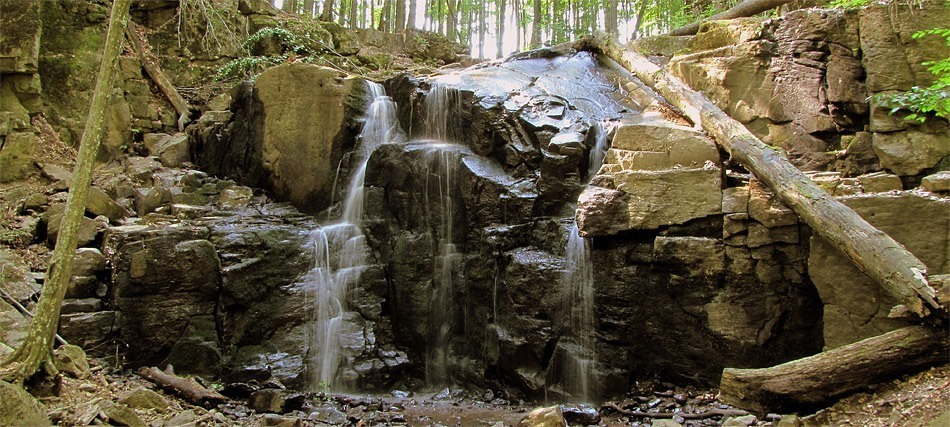
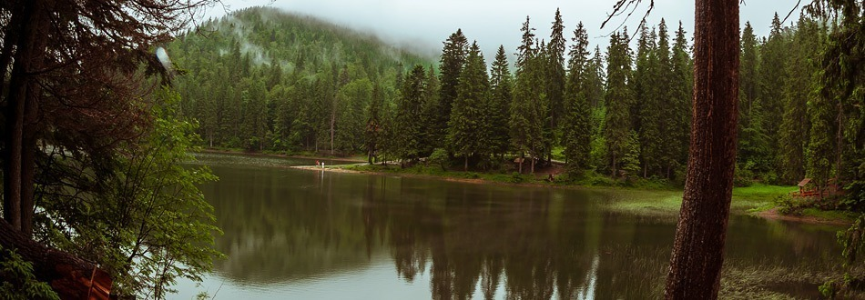
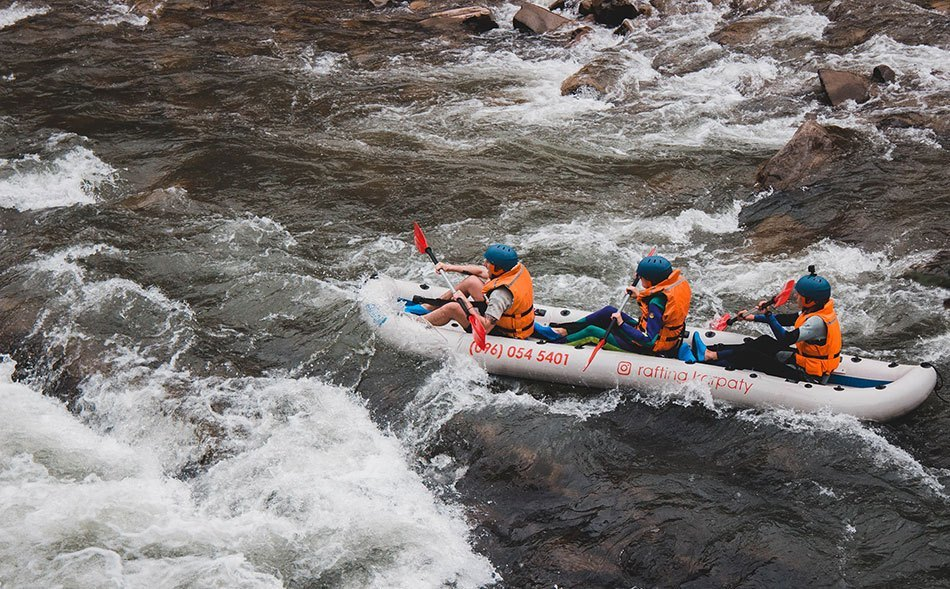
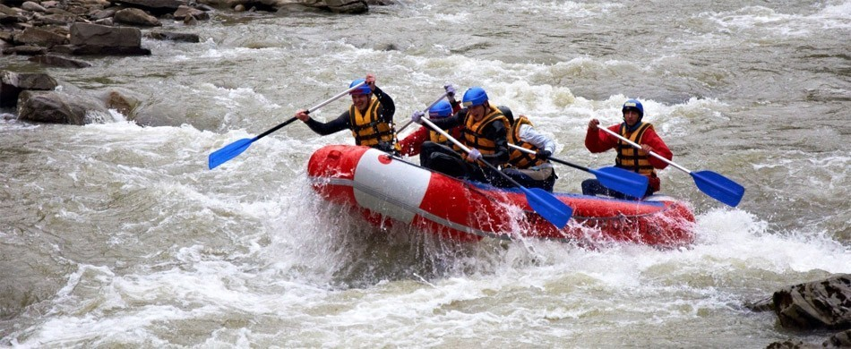
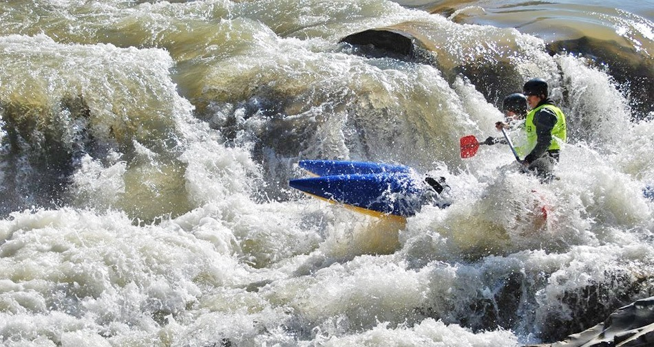

Пробій — один з небагатьох карпатських водоспадів, до якого не треба далеко їхати: знаходиться він у самому серці м. Яремче.Дорогою на яремчанський ярмарок ви обов’язково пройдете вузьким мостом, під яким гуде Пробій – чи не найповноводнійший каскадний водоспад Українських Карпат. Кажуть, раніше висота падіння води тут сягала 25 метрів, проте для сплаву лісу по ріці Прут водоспад підірвали, значно зменшивши його висоту.Води Прута спадають вниз з висоти 8 метрів. Більшість карпатських водоспадів можна роздивитись лише з річкових долин, а Пробій — з усіх можливих ракурсів. Наприклад, можна спуститись до самого водоспаду зі сторони ярмарку.Але будьте обережні! Не спокушайтесь вилізти на річкові брили: банальна цікавість чи бажання отримати пам’ятне фото Пробія може коштувати вам здоров’я — ба й життя! Каміння підступно слизьке, а сила води набагато більша, ніж видається на перший погляд. Трагічні випадки, коли непильного туриста збивало з ніг, на жаль, не поодинокі.
У вас також є рідкісна нагода роздивитись водоспад згори — у 20 метрах над Пробієм височіє пішохідний міст.До речі, на лівий берег Прута тут, окрім як мостом, можна потрапити й іншим шляхом – придбавши квиток на підвісну переправу. Гадаємо, швидкість падіння води та динамічна сила водоспаду вразять вас ще більше, коли пронесетесь над каскадом, міцно тримаючись за натягнутий канат.Від Пробія, до речі, вгору веде промаркований туристичний маршрут на хребет Явірник. А ще це місце слугує кінцем рафтингового маршруту Яремчанським каньйоном — екстремали, за умови достатнього рівня води у Пруті, сплавляються від Ворохти до Яремче. Протяжність такого сплаву — близько 40 км.
Прогулянка до водоспаду Скакало не потребує багато часу. Рушаючи до цієї природної атракції з віддалених селищ, можна відвідати ще кілька закарпатських цікавинок. Як щодо романтичного замку?Незаймана природа Українських Карпат причаровує туристів, наче приворотне зілля. Деякі локації користуються настільки високим попитом серед гостей, що місцеві жителі вирішили від гріха подалі зробити незайману природу менш незайманою, і облаштували стежки та територію довкола. Одним з таких місць є водоспад Скакало — стрімкий потік, що зривається зі скель урочища Нижнє Грабовище.Назву свою водограй отримав через те, що його потік наче стрибає по каменях — скаче. До потоку веде маркована стежка, щоб любі гості Закарпаття не заблукали. Але багато туристів припускаються помилки: діставшись до першого каскаду, вони вирішують, що це і є знаменитий Скакало. Не зупиняйтесь! Крокуйте стежкою далі — невдовзі вашим очам відкриється величне і водночас безтурботне видовище гірського водоспаду.Якщо порівнювати Скакало з іншими карпатськими водограями, його можна назвати крихіткою: загальна висота каскадів — 4 м. Що це проти 24 м водоспаду Воєводин? А якщо пригадати висоту каскадів Шипоту, яка становить 14 м? От де є, на що подивитись! А тут лише 3 невеликі каскади. І хоча, коли мова йде про водограї, розмір дійсно має значення — Скакало варто визнати гідним суперникам своїх вищих братів. Він розташований у вельми приємній і мальовничій місцині.
Найближчий населений пункт — Чинадієво. Від цього селища водоспад відділяють символічні 3.5 км — менше години пішої ходи. Ви ж знаєте, чому кожен порядний турист має відвідати Чинадієво? У цьому містечку розташований старовинний замок “Сент-Міклош” — романтична фортеця, стіни якої були свідками кохання угорської княгині Ілони Зріні й трансільванського графа Імре Текелі. Відвідини "фортеці кохання" налаштовують на романтичний лад — це враження можна закріпити, здійснивши прогулянку до водоспаду. За орієнтир можна взяти санаторій “Водограй”, від якого до маленького природного дива веде маркована стежка — гарантовано не заблукаєте. Шлях йде через гарний буковий ліс, по дорозі доведеться перетнути невеличкий міст.
Синевир — найбільше гірське озеро України. Воно оточене легендами і загадками. Туристи з усієї Європи прагнуть помилуватись його блакитними хвилями.Озеро Синевир, без перебільшення — легенда Карпат. Це найбільше і найзагадковіше гірське озеро України. Шукати цю перлину варто серед скель і лісів гірського масиву Внутрішні Ґорґани, на землях національного природного парку з тією ж назвою.Вода Синевиру чиста і прозора настільки, що в ній добре себе почуває форель — риба, яка може жити лише у кришталево чистій воді. Виникло озеро внаслідок землетрусу, до нього стікаються три гірські потоки, підтримуючи високий рівень води в будь-яку пору року. Гладінь озера іскрить блакиттю, але рівно посередині з води випростовується невеличкий острівець. Ця картина подібна до блакитного ока з темним вічком посередині — саме тому Синевир і отримав свою другу, вельми романтичну назву: Морське Око.
Синевир — культове для туристів місце. Сюди приходять пішохідні мандрівники з наплічниками та наметами. До озера їдуть на автівках та автобусах, щоб помилуватись красою Морського Ока. Влаштовують екскурсії з розташованих поблизу сіл. Тому територія навколо добре облаштована: споруджено оглядові майданчики, встановлено декоративні скульптури. Але всі ці “ознаки цивілізації” вписані в ландшафт так майстерно, що не псують його.Озеро оточене старими смереками, тут надзвичайно легко дихати — завдяки аромату хвої, що насичує повітря. Хоча поблизу туристичної перлини завжди чимало людей, тут можна зустріти диких звірів. Територія природного парку знаходиться під охороною, на цій ділянці заборонене полювання, рубка лісу та будь-яке інше втручання у справи дикої природи.Сльози кохання Скульптура, що прикрашає озеро, зображує двох коханців: юнака на ім’я Вир і дівчину Синь — за легендою саме від їхніх імен утворилась назва озера. Висота монументу сягає 13 м. Що ж це за легендарні закохані, які дали ім’я найбільшому карпатському озеру?
Рафтинг — виняток з усіх правил. Екстремальний спорт, що не потребує довготривалої підготовки, розвага, якій не заважає негода. Адже, коли дощить, рівень води в річці підіймається — те, що треба для рафтингу!Найкращий час для сплаву Чорним Черемошем — весна, коли у горах тануть сніги, і ріки стають повноводними. Біля Верховини розташовано кілька рафтингових таборів, більшість з яких пропонують кількаденну програму сплавів — оптимальний варіант, скажімо, на час травневих вихідних, хоча сезон сплавів може тривати до жовтня.Суть рафтингу у сплаві бурхливою порожистою річкою на надувних човнах, катамаранах чи рафтах. Сплав може бути як індивідуальним, так і колективним. Особливих навичок для рафтингу мати не потрібно — всьому, що треба знати, навчать інструктори.Чорний Черемош — лівий витік Черемошу, і так, існує інший витік під назвою Білий Черемош. Ріка котить свої води через Верховинський район Івано-Франківської області, і її загальна довжина — 87 км. Долина ріки мальовнича, із крутими урвистими схилами та густими лісами, вона слугує природною межею, що відділяє Гринявські гори від Чивчинських та Чорногори. Крижані води Черемоша живляться дощами та снігами. На берегах потоку лежать такі селища, як Буркут, Верховина, Криворівня, Дземброня, Верхній Ясенів та інші.
Чудова розвага для весняно-літнього сезону! На Опорі сплавляються новачки та експерти. Вибір маршрутів тішить: можна організувати короткий кількагодинний сплав або провести повноцінний день на веслах.Опір — одна з небагатьох карпатських рік, що розтягуються на кілька десятків кілометрів. Довжина Опору — біля 58 км, ширина русла місцями становить 50-80 метрів.З набуттям популярності рафтингу на карпатських річках, туристи-екстремали з’явились і на Опорі: проходження ріки має 2-у категорію складності. Для тих, кого приваблюють довгі маршрути, на сплав краще приїздити навесні: тоді повноводна ріка дає можливість починати маршрут від Славського. Влітку, коли рівень води в Опорі суттєво знижується, сплавляються тільки від Сколе. Рафтинг на Опорі мальовничий та захопливий. Довжина маршруту “для новачків” складає близько 15 км (старт у Сколе), тривалість такого сплаву в середньому — 3.5 години.Назва водойми виникла, ймовірно, за часів монголо-татарської навали: у середині XIII ст. тут чинився потужний опір загарбникам.Якщо маєте більше вільного часу та бажання борсатись у воді, маршрут можна значно подовжити, сплавляючись від Сколе до Стрия. Тривалість проходження 30-40 км маршруту становить приблизно добу. Це комбінований маршрут: вирушивши до Опору, за кілька годин перейдете на ріку Стрий.Не хвилюйтесь, весь день сидіти на веслах не доведеться! Зазвичай, маршрути такої протяжності мають точки перепочину та включають екскурсії природними чи архітектурними пам’ятками, що розташовані неподалік ріки. Звісно, без смачного обіду вас ніхто не лишить!
Рафтинг на Пруті називають одним з найтриваліших та найскладніших для проходження серед всіх річок Українських Карпат. Де на Пруті не варто ґав ловити, а варто міцніше тримати весло — далі.На відміну від інших карпатських річок, придатних для рафтингу/сплаву, Прут влітку не міліє до непрохідності. Щоправда, на великих плавзасобах, катамаранах та рафтах подолати пороги таки стає неможливо.Оптимальні для сплаву в цю пору року — маневрені байдарки з низькою осадкою. Плюс, легка вага плавзасобу зумовлює динамічний та достатньо напружений характер сплаву — у вас просто не буде часу розслабитись!.Ділянка Яремче-Делятин має приблизно 14 км завдовжки. Складність порогів середня. Незважаючи на те, що ухил річки дещо меншає, течія лишається доволі швидкою. Притиски, локальні зливи чергуються з ділянками гладкої води.Найдовша ділянка — від Делятину до Чернівців має 157 км! На початку Делятину річка розходиться на два рукави. Уважно проходимо місце їх злиття. Далі — тільки нескладні шивери, що чергуються з гладкою водою. Річка тут стає помітно спокійнішою, береги значно нижчі, ніж на попередніх ділянках.
